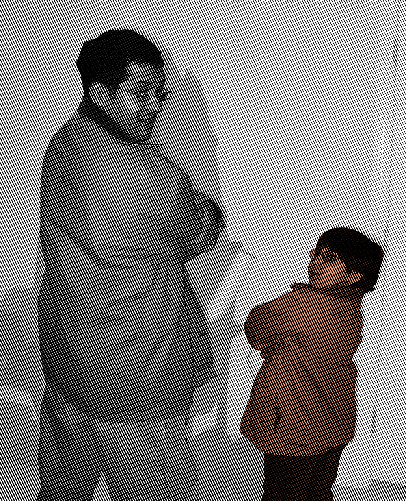
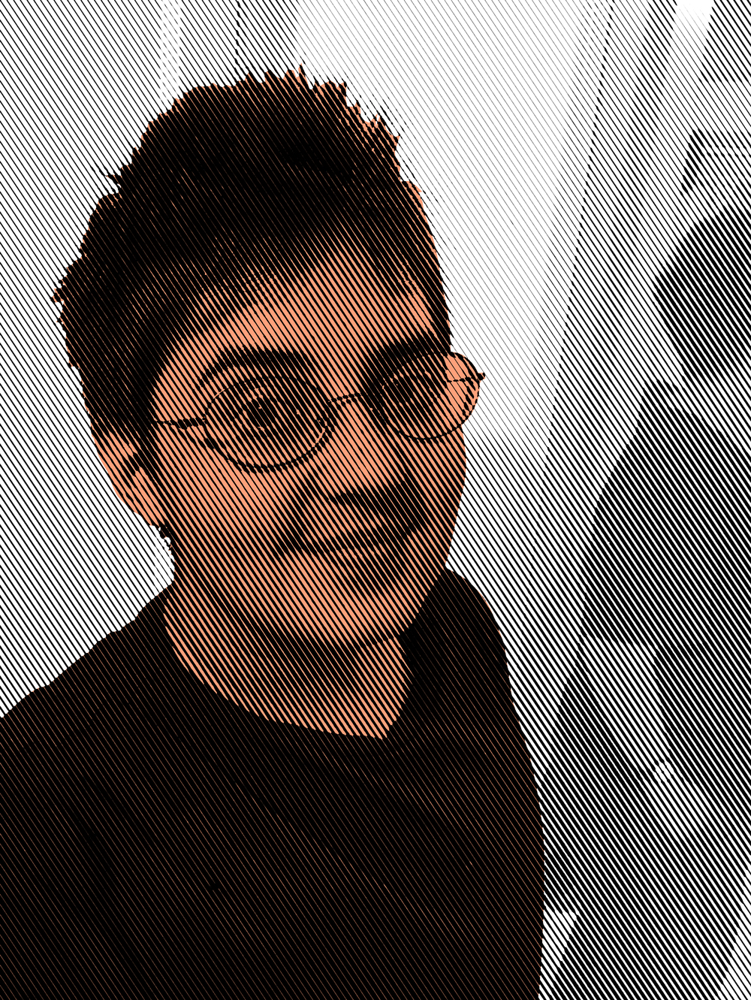
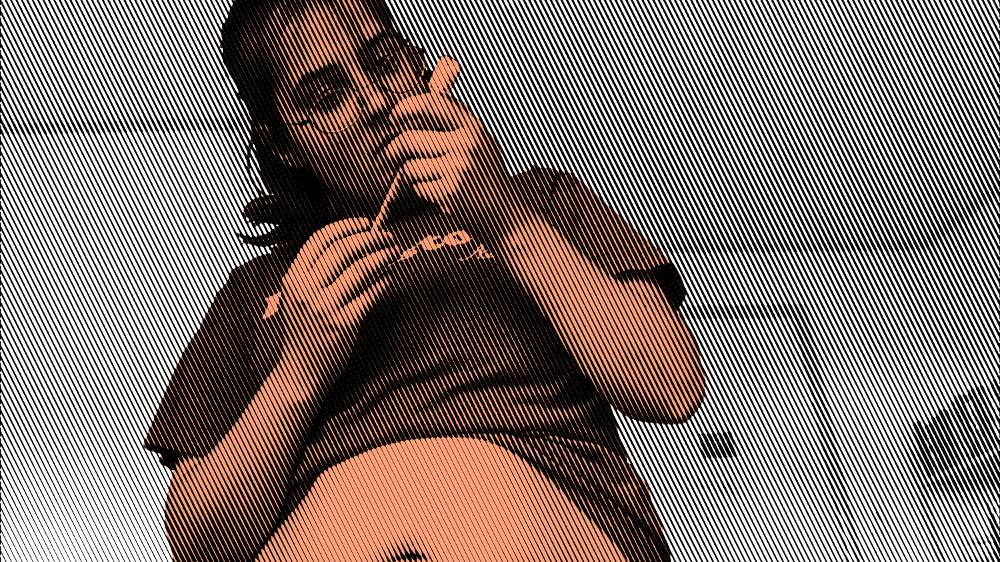
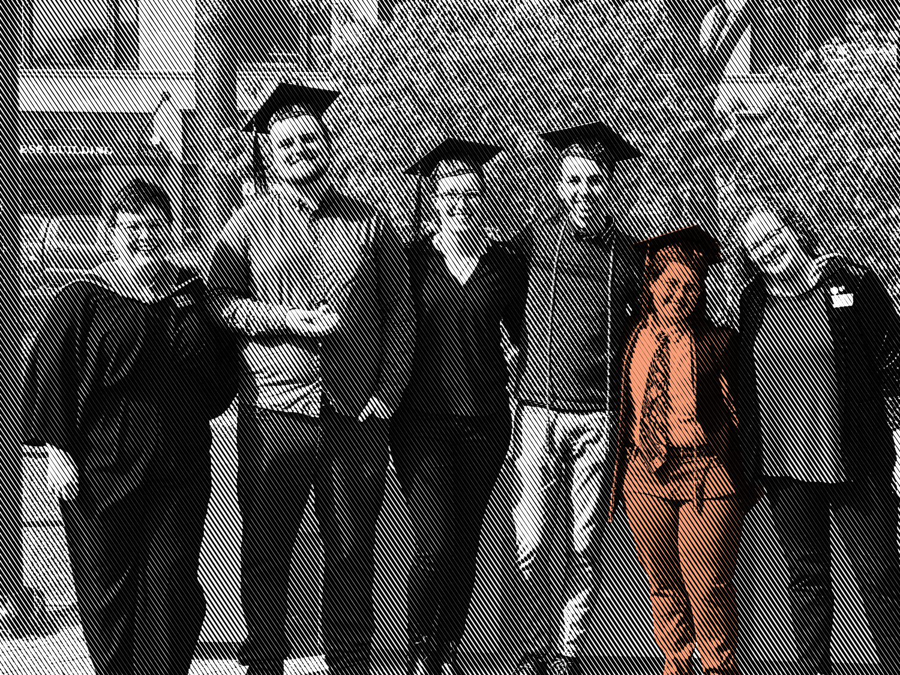

I am neither a man nor a woman.
I’ve known for a while now, and it’s important to me to share this and live my happiest and most authentic life. It has been tiring to live in the closet, to try to keep separate where I am and am not pretending to be someone else. Being in the closet has limited how honest I could be with the people I care about. I’ve decided to come out now because I have begun taking masculinizing hormones so that I can finally live comfortably in my body. My voice and appearance will be changing over the next few months, and I’m looking forward to sharing this journey with my friends and family.
"Being in the closet has limited how honest I could be with the people I care about."
I first realized that I was different when I was about 5 or 6. Gender just didn’t hold the same weight for me as it did other kids. I was just as happy to play pretend as the pretty princess or the stinky sock. I connected with characters of any gender and wanted to be like my dad when I grew up. Or my mom. I had to learn that I was “supposed” to be feminine.
Another clue might have been my lifelong discomfort with my chest. Even as a young child, just knowing that I would develop breasts alienated me from that part of my body. It started to get worse in middle school when I hit puberty. I distinctly remember having panic attacks on multiple occasions when I was supposed to have plans but didn’t have clothing that made me feel adequately comfortable. My chest has long been the center of the disconnection with my body.
In high school I tried really hard to become comfortable as a “woman,” costuming myself in femininity every day. And that sort of worked for a while. The positive attention wasn't unwelcome. It was a creative outlet, and at times it could be an extension of my art practice. But it was not a way to feel comfortable or truly express myself. It was like dressing for Halloween every day, teetering between just comfortable enough that I wouldn’t have a panic attack, and dissociated enough that it wasn’t really my body anymore.
"My chest has long been the center of the disconnection with my body."
This fell apart in college, when I dressed for studio work, activity, and practicality. Curating an aesthetic was no longer part of my art practice, and it didn’t make sense to wear clothes that I couldn’t move or make work in. With physical comfort came comfort in my expression.
There were many occasions since I was a kid that I wondered if I was a trans man. I found a variety of excuses to explain why that wasn’t true: I didn’t like “manly” stuff like sports; I didn’t feel like “a boy born in a girl’s body;” I didn’t want a penis. I was under the common misconception that all trans people felt these things, and that the only type of trans I could be was a man. I found out about nonbinary identities in high school and it fascinated me.
I first seriously considered coming out as nonbinary my sophomore year of college. I told one of my closest friends that I was thinking about starting to use they/them pronouns. It wasn’t until my junior year that I asked people to refer to me using "she" or "they."" That’s when I realized I didn’t actually want to be called “she” at all. I then began using exclusively they/them pronouns at school.
In practice this is called the "singular they" pronoun, and it's used in everyday conversation more than you might think. In a sentence it looks like, "I am walking their dog for them while they are getting a haircut."
After being internally fixated on the idea of binding for years, I tried flattening my chest with bandages, looked in the mirror, and felt euphoria. For the first time, I caught a glimpse of myself staring back at me in the mirror. In my junior year I bought my first binder, a garment similar to a sports bra that gives my chest a flatter appearance. And I absolutely loved it. It wasn’t long before I bought another binder and abandoned traditional bras altogether.
"For the first time, I caught a glimpse of myself staring back at me in the mirror."
My senior year I began to dress more masculinely more frequently, with button ups and ties. And I felt really good in it, until I saw images or reflections of my body. For a while I thought it was simply my weight—something I’ve struggled with for a long time. But by trying different cuts of clothing, I realized it was the actual shape of my body. I would be more comfortable with the same weight and belly with a more traditionally masculine fat distribution. The softness of my hips and my thin waist make me deeply uncomfortable.
I also became uncomfortable with my birth name. Specifically, how when I would meet new people they would say “such a pretty name.” I know pretty is a positive adjective, but in that context it carried the weight of womanliness, an idea that I have never felt comfortable in. After searching for about a year, I settled on the name Art. It was important to me that it reflected at least one of my cultural identities, and to me Art expresses the three closest to me (there are versions of Art in Latin American, Jewish, and Finnish cultures). I also wanted it to be masculine, and feel like it just fit. I am not ruling out the possibility of ever going back to my birth name, but until I feel more comfortable in my body, I will not be comfortable with a name that strangers constantly call “pretty.”
"After searching for about a year, I settled on the name Art."
So a couple months before I graduated college, I started going by Art. It was around that time that I decided that I would be happier if I started testosterone (also known as T). I researched all the effects (and side effects) to make sure that’s what I really wanted. I watched countless videos of people talking about their experiences on T. I knew I wanted a deeper voice, facial and body hair, increased muscle definition, and most of all a more masculine pattern of fat distribution.
The matter of actually starting T was more difficult. It can depend on your doctor, medical history, insurance, therapist, and general resources in your area. Most doctors require a note from a therapist before starting treatment. Most therapists, including the school counselor I approached, require six months of weekly or monthly appointments before deciding whether confirm or deny a patients treatment. This system is both time consuming and expensive. Fortunately, some doctors follow the Informed Consent model, where they provide the patient with all the relevant medical information, and allow them to make their own decision.
I was finally able to start T through a Planned Parenthood in Seattle that provides hormone replacement therapy through the Informed Consent model. They provided amazing care, and were super knowledgeable about the medication, and thorough with making sure I was informed about testosterone. They always called me by the correct name and pronouns, and even inquired about my mental health, my support system, and the safety of my personal relationships. We had a long conversation about my medical history, and I felt more cared for and heard than I have with most other medical professionals. I was able to get a prescription for the first 3 months of T that day, and went in for my first checkup in October. I am really happy with my experience so far with Planned Parenthood and the Informed Consent model, though I know everyone’s experiences and needs are different.
I am switching to a topical testosterone cream to continue my medical transition. As of my first three months on T, I have seen an increase in appetite, I’m getting acne, a slight increase in body hair, and my voice might be a smidge deeper (it’s hard to tell). I am going by they/them pronouns and using the name Art, though I am not currently looking into a legal name change. I am managing my gender dysphoria by binding my chest and wearing clothing that gives me a more masculine style and shape. This has already made me a lot happier! I feel much more free and comfortable in my skin. I can even enjoy taking photos of myself now.
"I feel much more free and comfortable in my skin."
In the future, I see myself getting top surgery. While binding has been life saving, I can only do it safely for 8-10 hours per day, and when done consistently over years, it could negatively impact my body. Top surgery will allow me to go to the beach, work out, bathe, and sleep comfortably, things that I have never been able to do before. Currently, the hurdles are mostly financial. It’s not fully covered by my health insurance, and I will have to take at least 2 weeks off of work for recovery. So while my need for the procedure is urgent, it might be a while until I’m afforded that comfort.
"Top surgery will allow me to go to the beach, work out, bathe, and sleep comfortably, things that I have never been able to do before."
So right now, I am living my best life as an out nonbinary person! I’m surrounded by people who support me and affirm my identity. I am extremely lucky that my family is accepting. My friends have taken to my new name and pronouns quickly, and my friends who are also trans have been here to gripe and commiserate on all our shared struggles. In a world that constantly doubts my experiences, feeling understood by my friends is invaluable. And finally, I am incredibly fortunate to have an accepting workplace. While not everyone is practiced at using they/them pronouns, everyone is willing to put in the effort and make me feel welcome.
"I’m surrounded by people who support me and affirm my identity."
Feel free to reach out if you have any questions!
One of the things that is important to me about being out and visible as trans is the opportunity to spread awareness and expose people to new ideas; I hope to make it easier for the next person. If I can help someone get better at singular they pronouns, they might misgender the next person less. If I can debunk misconceptions about trans people, if I can slowly decrease ignorance and intolerance, it might be easier for the next person to come out. It can be a difficult topic to talk about (from all sides), and I am willing to answer any questions coming from a place of good faith and mutual respect.
A few ways you can support me:
- Try to use my correct name and pronouns! It can take a while to get used to, but there is no shame in practicing.
- Everyone messes up once and a while! When that happens, just correct yourself and move on with the conversation.
- Remember that I'm the same person that I've always been! This is just another step in my personal journey.
Resources:
- Nonbinary Basics
- Guide to Pronouns
- About Informed Consent
- About Binding
- Why It's Important to Support Trans Youth
- How To Support Nonbinary People in Your Life